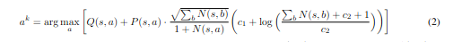

The Muzero planning algorithm learns to play games with a discrete space of moves. It uses a neural network to predict the average score that will be found from a position, but it is also able to look through the tree of possible trajectories, taking moves and then predicting the expected value from those positions, and passing that value back down the tree to the original node, and thereby improves the estimation of the value of each move, so that it can eventually return the best.
This makes a lot of sense, and has proved to be a very productive approach, but when you look at the implementation detail of this algorithm, we see the following algorithm, which doesn't look nearly so neat or comprehensible.

Defining the terms
Firstly, what do the various terms mean?
-
-
-
-
<\(Q\)is the mean value of each action as found by previous simulations. Each simulation is played out until a new node is reached, at which point the total expected future value is estimated (using NN) at this final node, and the intermediate reward is also estimated at each node between this new node and the root node, and the sum of these, appropriately discounted, is the value estimate of the action. Q is the average value of all simulations starting with that action, and is 0 if no actions in this direction have yet been taken. All value estimates are linearly normalized to between 0 and 1, and the simulation keeps track of the smallest and largest reward that have been found to maintain this scaling.
- Lastly, the constants <\(c_1\)and \(c_2\)are, in the words of the paper, 'used to control the influence of the prior \(P(s,a)\)relative to the value \(Q(s,a)\)as nodes are visited more often. In our experiments \(c_1=1.25\)and \(c_2=19652\).
-
-
<\(P\)is called the policy, but is perhaps better called the prior. This is an estimate (again, using a trained NN) of the distribution of actions that will be taken by the simualator, and is trained (though only trained on distributions of actions at the root node, not the more sparse distrbutions found deeper in the tree). This allows the search tree to be pruned towards those actions that will go well - which is vital here because what's noticably not present here is the estimated value of the action, or the state immediately resulting from the action. This estimate exists, as it has to estimate the value of trajectories, but it only comes into right when a new node is reached (though when a node is first explored, all nodes will be new and so the value function will play a large initial roll in determining the direction of the rollouts.)
-
-
<\(N(s,a)\)is the number of simulations from this node thta have tkaen action a, and the \(\sum_b{N(s,b)}\)is the total number of simulations that have gone beyond this node. Note that all of this tree structure is built fresh for every step of every game.
What does it mean?
The last part of the equation is easy to understand. \(\sum_b{N(s,b)}\)starts at 0, so \(c_1\)is the initial weighting of the prior, as the second part of that term is essentially 1. Then, as the total number of simulations grows, this second term starts to increase as well, raising the impact of the prior. However, they perform only 800 rollouts per move, so given their use of \(c_2 = 19652\), this second term will never be more than \(\log(\frac{800 + 19652 + 1}{19652}) \approx 0.017\), so this second term is rather strange and can largely be ignored.
Note that since the value scores are scaled to the 0 to 1 range, their magnitudes are comparable to the magnitudes of the prior, which is a probability, so we can interpret \(c_1\)as roughly being the weight of the prior with the vlaue having a weight of 1, but if predicted values are all very low, or the prior on actions very diffuse, then the variance of the prior and value scores may be very different. It would be interesting to see how these algorithm would perform if the weightings were adapted each simulation so as to set the variances of the two at a chosen ratio.
Multi-Armed Bandits
With this the equation becomes a bit less daunting and we can focus on the other weighting term, \(\frac{\sum_b{N(s,b)}}{N(s,a) + 1}\). As explanation for this equation, the MuZero paper cites two, sources. One is the AlphaZero paper, which presumably uses a similar approach, but the paper itself doesn't mention any detail on how it samples its options. The other is Multi-Armed Bandits with Episode Context, a mathematical paper deriving bounds on multi-armed bandit situations in which we have access to access to additional information on the quality of the option.
Multi-armed bandits is an abstract formulation of a situation just like that faced by a game player. In this version, the player has multiple options, each of which give a payoff according to its distribution, and you have a fixed number of turns taking one of the options, and you want to minimise the expected, or alternatively worst-case, gap, between your actions, and the ideal policy. This gap is called the regret. (The ideal policy is just taking the option with the highest reward at each turn, but of course we don't initially know which this is.)
The Multi-Armed Bandits paper describes an algorithm called PUCB (Predictor + Upper Confidence Bound). This algorithm is in turn derived from a earlier paper called Finite-time Analysis of the Multiarmed Bandit Problem, by Auer, Cesa-Bianchi and Fischer on how to operate in a multi-armed bandits where each lever, or option, has a reward pulled from a distribution in [0,1], with unknown mean.
Auer, Cesa-Bianchi and Fischer's algorthim is called UCB1 and the rule in this initial work is to take the option that has the highest upper confidence bound, which can be calculated, in the language of MuZero, as \(Q(s,a) + \sqrt(\frac{2\log(\sum_b{N(s,b)})}{N(s,a)})\). This was shown to perform well, having provably low expected and worst-case regret, with the expected regret being
O(\sqrt(\log(n)))) and the worst-case regret, with adversarially chosen distributions having a regret of
\(O(\sqrt(n\log(n))\)where \(n\)is the number of time that an option is chosen, and O being Big-O notation.This rule makes some level of intuitive sense - we want to combine the observed reward with a measure of our uncertainty, which is inversely proportional to the number of samples that we have, and the longer we go on the greater the weight we place on this certainty. The 2 is somewhat arbitrary - the 'upper confidence bound' is underdefined, we'll never have certainty that the average reward of an option is below some figure - we could have been arbritraily unlucky so far - so instead we take some level of upper bound, of which the 2 represents one, presumably reasonble, option.